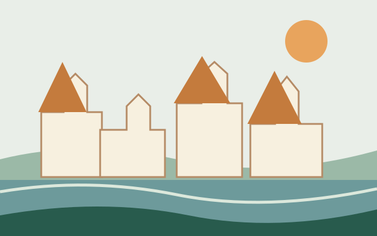
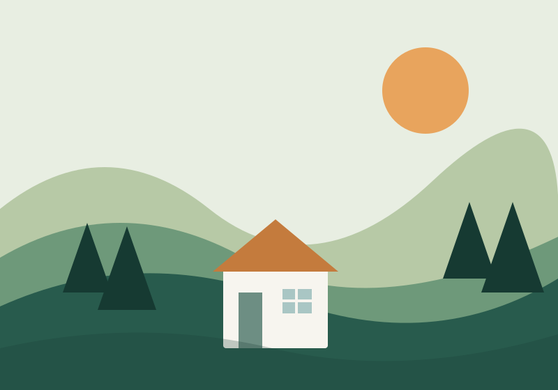
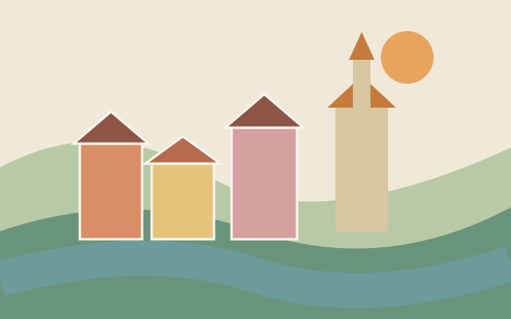
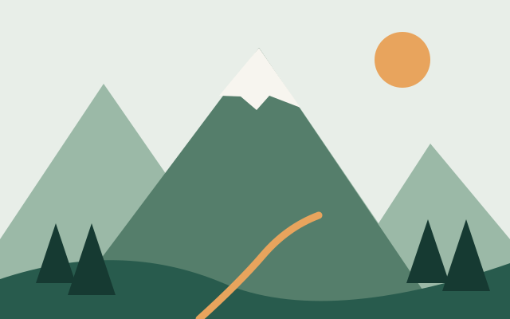
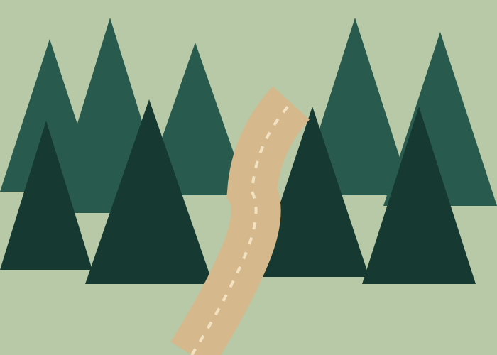

01 / MĚSTO

Praha
Projdi se historickým centrem, přejdi Karlův most a objev zákoutí hlavního města.
Objev Prahu ↗MALÁ ZEMĚ, VELKÁ DOBRODRUŽSTVÍ
Od historických uliček až po horské vrcholy. Najdi inspiraci na svůj příští výlet a poznej místa, která stojí za to vidět.
Najít inspiraci ↗
KAM VYRAZIT
Tři různá místa, tři jedinečné zážitky. Vyber si podle nálady.

Projdi se historickým centrem, přejdi Karlův most a objev zákoutí hlavního města.
Objev Prahu ↗
Prozkoumej malebné uličky, historické domy a výhledy na meandr řeky Vltavy.
Poznej Krumlov ↗
Vydej se na horskou túru, nadechni se čerstvého vzduchu a užij si daleké výhledy.
Vyraz do hor ↗
ZPOMAL A ROZHLÉDNI SE
Na výlet po Česku nepotřebuješ složitý plán. Stačí pohodlné boty, trochu zvědavosti a chuť vydat se novým směrem.
TVŮJ DALŠÍ VÝLET
Začni malým výletem a vrať se s velkým příběhem.
Vybrat místo ↑